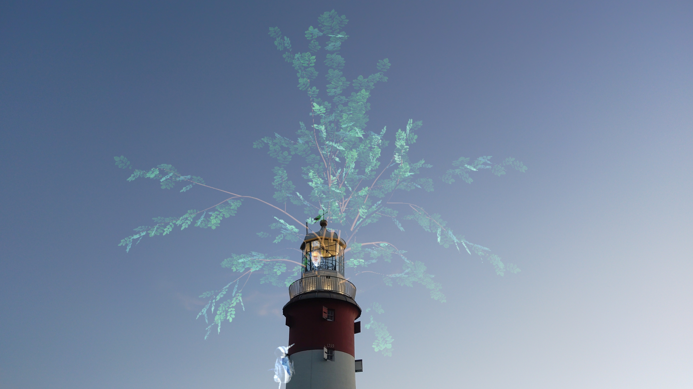
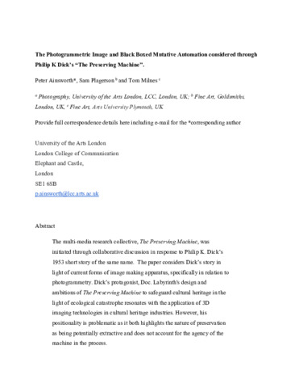
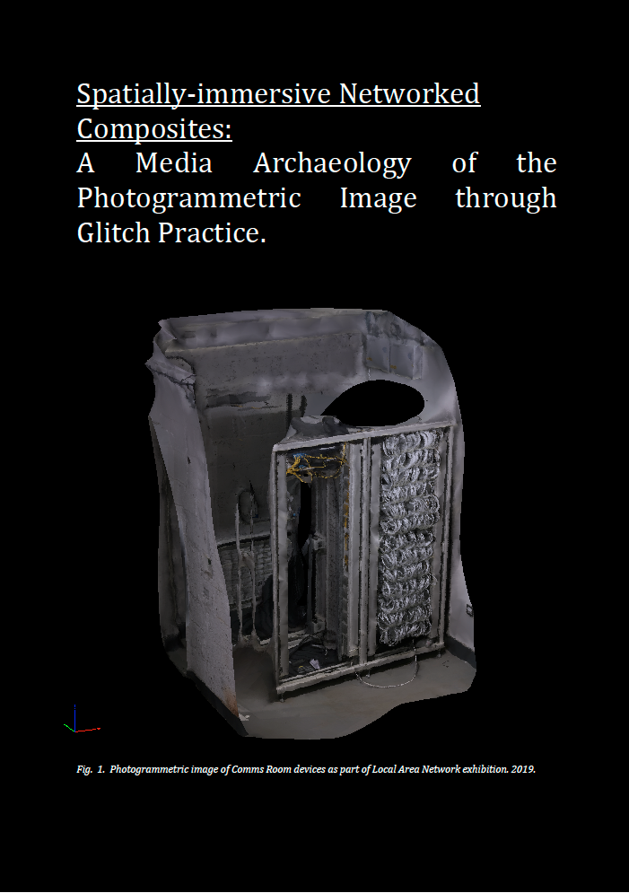
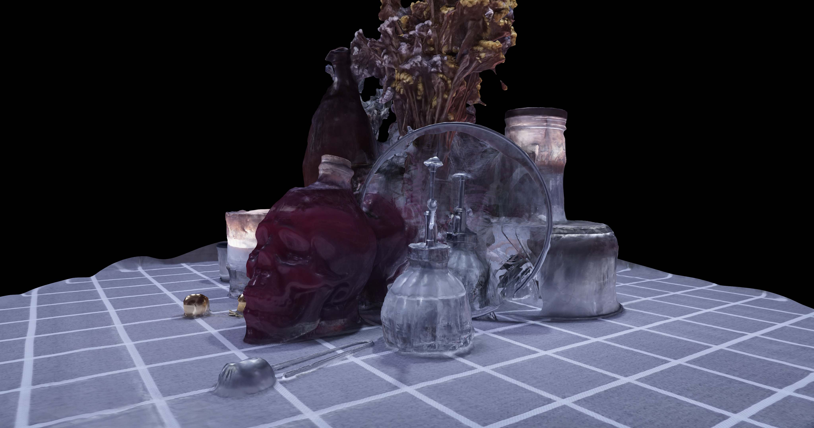

Research

Ashnihilation
Tom Milnes.
This practice-led project explores how augmented reality can support emotional and critical engagement with ecological crisis. Animated, 3D-scanned hybrid species affected by ash dieback combine speculative design, posthumanist theory and community co-creation in site-specific digital storytelling.

The Photogrammetric Image and Black-Boxed Mutative Automation Considered through Philip K. Dick’s The Preserving Machine
Peter Ainsworth, Sam Plagerson and Tom Milnes.
This article examines photogrammetry through Philip K. Dick’s The Preserving Machine, questioning claims of objectivity, accuracy and automation in computational image-making. It argues that photogrammetric images should be understood relationally, as part of wider assemblages of technology and meaning.

Spatially Immersive Networked Composites: A Media Archaeology of the Photogrammetric Image through Glitch Practice
Thomas Milnes.
This practice-based doctoral research examines the aesthetics of photogrammetric images and proposes “Spatially-immersive Networked Composites” as a framework for understanding computational, navigable imagery. Through sculpture, video, augmented reality, media installation and glitch-led media archaeology, it foregrounds the errors and algorithmic processes that reveal the image’s material construction.

Ephemer(e)ality Capture: Glitching The Cloud through Photogrammetry
Tom Milnes.
This artistic research exposition uses reflective, transparent, specular and patterned objects to disrupt cloud-based photogrammetry. The resulting glitches expose how imaging algorithms interpret space and propose new, critically reflexive methods of image-making.